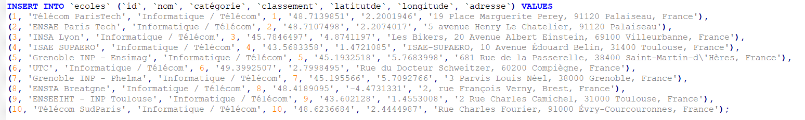

Schoolmap
Site created during my 2nd year of IUT
During my second year of DUT, I developed in a team of 3 a site in php.

This site had to display on a map the list of available schools around a place. We used Leaflet, a library to display and manipulate a map on a site, in javascript.
The main work was the extraction, storage and use of data on these schools. For this, we retrieved the data via an external API, saved it in JSON and reused via ajax functions.